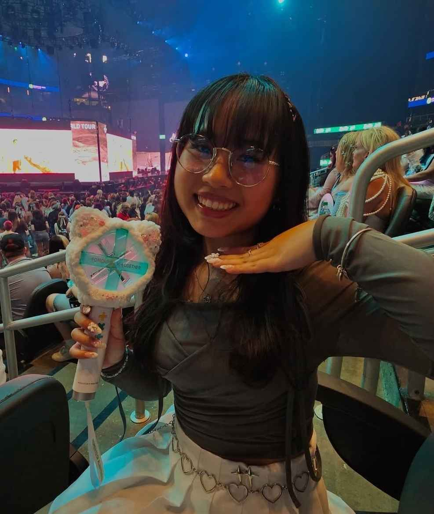

About Me
The first time I discovered I could burn my fingerprints off was at the ripe age of 6. My first hot glue gun and my bare fingers quickly became close friends. Whether it was building miniatures, crafting my own inventions, or experimenting with mixed media drawings, I was always doing something creative. Fifteen years later, not much has changed. I’m still burning my fingers off with hot glue, this time while making my own automatic egg incubator, competitive sniper board game, or whatever creative endeavor my heart desires.
Art and creativity have always been a central part of my life, but what if I could also combine that with technology? When I discovered the Creative Technology and Design program at CU Boulder, I was immediately drawn to it. It felt like a place where art and engineering naturally overlap. CTD was a space where I could build playful tools using UI/UX design, digital art, and interactive systems, focusing on things that are both expressive and functional. I learned how to keep experimenting and to keep turning ideas into things people can actually interact with and enjoy.